\(~\)
\(~\)
# Load the necessary libraries
library(knitr)
library(rmarkdown)
library(ggpubr)
library(dplyr)
library(tidyr)
library(plyr)
library(ggplot2)
library(maps)
library(mapproj)
library(sf)
library(usmap)
library(urbnmapr)
library(tidyverse)
library(mice)
library(VIM)
library(lattice)
library(ggthemes)
library(e1071)
library(class)
library(caret)
library(stringr)
library(sjPlot)
library(data.table)# Set random seed
set.seed(329)\(~\)
sessionInfo()## R version 4.1.2 (2021-11-01)
## Platform: aarch64-apple-darwin20 (64-bit)
## Running under: macOS Monterey 12.3.1
##
## Matrix products: default
## BLAS: /Library/Frameworks/R.framework/Versions/4.1-arm64/Resources/lib/libRblas.0.dylib
## LAPACK: /Library/Frameworks/R.framework/Versions/4.1-arm64/Resources/lib/libRlapack.dylib
##
## locale:
## [1] en_US.UTF-8/en_US.UTF-8/en_US.UTF-8/C/en_US.UTF-8/en_US.UTF-8
##
## attached base packages:
## [1] grid stats graphics grDevices utils datasets methods
## [8] base
##
## other attached packages:
## [1] RColorBrewer_1.1-3 car_3.0-12 carData_3.0-5
## [4] naivebayes_0.9.7 corrplot_0.92 reshape2_1.4.4
## [7] data.table_1.14.2 sjPlot_2.8.10 caret_6.0-90
## [10] class_7.3-20 e1071_1.7-9 ggthemes_4.2.4
## [13] lattice_0.20-45 VIM_6.1.1 colorspace_2.0-3
## [16] mice_3.14.0 forcats_0.5.1 stringr_1.4.0
## [19] purrr_0.3.4 readr_2.1.1 tibble_3.1.6
## [22] tidyverse_1.3.1 urbnmapr_0.0.0.9002 usmap_0.5.2
## [25] sf_1.0-6 mapproj_1.2.8 maps_3.4.0
## [28] plyr_1.8.6 tidyr_1.2.0 dplyr_1.0.8
## [31] ggpubr_0.4.0 egg_0.4.5 ggplot2_3.3.5
## [34] gridExtra_2.3 rmarkdown_2.11 knitr_1.37
##
## loaded via a namespace (and not attached):
## [1] readxl_1.3.1 backports_1.4.1 sp_1.4-6
## [4] splines_4.1.2 listenv_0.8.0 TH.data_1.1-0
## [7] digest_0.6.29 foreach_1.5.1 htmltools_0.5.2
## [10] fansi_1.0.3 magrittr_2.0.3 tzdb_0.2.0
## [13] recipes_0.1.17 globals_0.14.0 modelr_0.1.8
## [16] gower_0.2.2 sandwich_3.0-1 rvest_1.0.2
## [19] haven_2.4.3 xfun_0.29 crayon_1.5.1
## [22] jsonlite_1.7.3 lme4_1.1-28 survival_3.2-13
## [25] zoo_1.8-9 iterators_1.0.13 glue_1.6.2
## [28] gtable_0.3.0 ipred_0.9-12 emmeans_1.7.2
## [31] sjstats_0.18.1 sjmisc_2.8.9 future.apply_1.8.1
## [34] DEoptimR_1.0-10 abind_1.4-5 scales_1.1.1
## [37] mvtnorm_1.1-3 DBI_1.1.2 ggeffects_1.1.1
## [40] rstatix_0.7.0 Rcpp_1.0.8 performance_0.8.0
## [43] xtable_1.8-4 laeken_0.5.2 units_0.8-0
## [46] proxy_0.4-26 stats4_4.1.2 lava_1.6.10
## [49] prodlim_2019.11.13 vcd_1.4-9 datawizard_0.2.3
## [52] httr_1.4.2 ellipsis_0.3.2 farver_2.1.0
## [55] pkgconfig_2.0.3 nnet_7.3-16 sass_0.4.0
## [58] dbplyr_2.1.1 utf8_1.2.2 labeling_0.4.2
## [61] tidyselect_1.1.1 rlang_1.0.2 effectsize_0.6.0.1
## [64] munsell_0.5.0 cellranger_1.1.0 tools_4.1.2
## [67] cli_3.2.0 generics_0.1.2 sjlabelled_1.1.8
## [70] ranger_0.13.1 broom_0.7.12 evaluate_0.14
## [73] fastmap_1.1.0 yaml_2.2.2 ModelMetrics_1.2.2.2
## [76] fs_1.5.2 robustbase_0.93-9 future_1.23.0
## [79] nlme_3.1-153 xml2_1.3.3 compiler_4.1.2
## [82] rstudioapi_0.13 ggsignif_0.6.3 reprex_2.0.1
## [85] bslib_0.3.1 stringi_1.7.6 highr_0.9
## [88] parameters_0.16.0 Matrix_1.3-4 nloptr_2.0.0
## [91] classInt_0.4-3 vctrs_0.4.0 pillar_1.7.0
## [94] lifecycle_1.0.1 lmtest_0.9-39 jquerylib_0.1.4
## [97] estimability_1.3 insight_0.16.0 R6_2.5.1
## [100] KernSmooth_2.23-20 parallelly_1.30.0 codetools_0.2-18
## [103] boot_1.3-28 MASS_7.3-54 assertthat_0.2.1
## [106] withr_2.5.0 multcomp_1.4-18 bayestestR_0.11.5
## [109] parallel_4.1.2 hms_1.1.1 rpart_4.1-15
## [112] timeDate_3043.102 minqa_1.2.4 coda_0.19-4
## [115] pROC_1.18.0 lubridate_1.8.0\(~\)
#Read the files
beers = read.csv(file = '/Users/ttoth76/Downloads/CaseStudy1/Beers.csv',
sep = ',', header = TRUE)
breweries = read.csv(file = '/Users/ttoth76/Downloads/CaseStudy1/Breweries.csv',
sep = ',', header = TRUE)
# 3rd party data to augment current data set and provide additional insight
beers_consumption = read.csv(file = '/Users/ttoth76/Downloads/CaseStudy1/beer_consumption_by_state_2021.csv',
sep = ',', header = TRUE)
favorite_beer = read.csv(file = '/Users/ttoth76/Downloads/CaseStudy1/fav_beer_state.csv',
sep = ',', header = TRUE)
population_by_state = read.csv(file = '/Users/ttoth76/Downloads/CaseStudy1/SCPRC-EST2019-18+POP-RES.csv',
sep = ',', header = TRUE)\(~\)
# verify missing values & white spaces
sapply(breweries, function(x) sum(is.na(x)))## Brew_ID Name City State
## 0 0 0 0There are no missing values in the ‘breweries’ data set.
sapply(beers, function(x) sum(is.na(x)))## Name Beer_ID ABV IBU Brewery_id Style Ounces
## 0 0 62 1005 0 0 0There are 62 missing values in the ABV and 1005 missing values in the IBU variable in the ‘beers’ data set.
# remove leading and trailing white spaces for features required for the analysis
pattern = "(^ +| +$)"
replacement = ""
breweries$State = sub(pattern = pattern, replacement = replacement, x=breweries$State)
beers$Style = sub(pattern = pattern, replacement = replacement, x=beers$Style)
favorite_beer$full = sub(pattern = pattern, replacement = replacement, x=favorite_beer$full)
favorite_beer$fav_beer = sub(pattern = pattern, replacement = replacement, x=favorite_beer$fav_beer)\(~\)
# How many breweries are present in each state?
nbs = breweries %>% group_by(State) %>% dplyr::summarise(nobrews = n())
nbs_df = as.data.frame(nbs)
# display the number of breweries on US Map with 50 states
us_map_fips = fips_info()
consumption = merge(us_map_fips, beers_consumption, 'full')
names(nbs)[names(nbs) == 'State'] = 'abbr'
nbs_map_data = merge(nbs, us_map_fips, 'abbr')
fav_beer_df = merge(nbs_map_data, favorite_beer, 'full')
names(nbs_map_data)[names(nbs_map_data) == 'abbr'] = 'state_abbv'
# create state shape file
states_shape = get_urbn_map(map = "states", sf = TRUE)
# calculate the geo centroid of each state
center_states = st_centroid(states_shape)
# get longitude and latitude data
lan_lat = str_replace_all(center_states$geometry, "[()]", "")
lan_lat_noc = str_replace_all(lan_lat, "c", "")
center_states = mutate(center_states, lan = str_split_fixed(lan_lat_noc, ",", n=2)[,1])
center_states = mutate(center_states, lat = str_split_fixed(lan_lat_noc, ",", n=2)[,2])
center_states$lan = as.numeric(center_states$lan)
center_states$lat = as.numeric(center_states$lat)
# add latitude and longitude data to breweries data set
nbs_map_data_sf = merge(nbs_map_data, center_states, by = "state_abbv")
# Plot the result (using Budweiser logo colors)
plot_usmap(data = nbs_map_data_sf, values = "nobrews", regions = "states",
labels = TRUE, label_color = "black") +
labs(title = "Number of Budweiser Breweries by US States") +
scale_fill_continuous(low = "white", high ="#C8102E",
name = "# of breweries",label = scales::comma) +
theme(legend.position = "right") +
theme(panel.background=element_blank()) +
ggrepel::geom_label_repel(data = nbs_map_data_sf,
aes(x = lan, y = lat, label = nobrews),
size = 8, alpha = 0.8,
label.r = unit(0.5, "lines"), label.size = 0.5,
segment.color = "red", segment.size = 1,
seed = 1002) 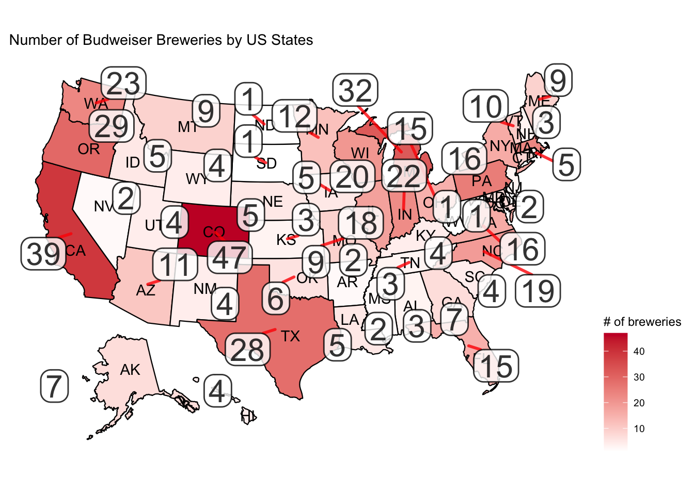
\(~\)
| State | nobrews |
|---|---|
| CO | 47 |
| CA | 39 |
| MI | 32 |
| OR | 29 |
| TX | 28 |
| PA | 25 |
| MA | 23 |
| WA | 23 |
| IN | 22 |
| WI | 20 |
| NC | 19 |
| IL | 18 |
| NY | 16 |
| VA | 16 |
| FL | 15 |
| OH | 15 |
| MN | 12 |
| AZ | 11 |
| VT | 10 |
| ME | 9 |
| MO | 9 |
| MT | 9 |
| CT | 8 |
| AK | 7 |
| GA | 7 |
| MD | 7 |
| OK | 6 |
| IA | 5 |
| ID | 5 |
| LA | 5 |
| NE | 5 |
| RI | 5 |
| HI | 4 |
| KY | 4 |
| NM | 4 |
| SC | 4 |
| UT | 4 |
| WY | 4 |
| AL | 3 |
| KS | 3 |
| NH | 3 |
| NJ | 3 |
| TN | 3 |
| AR | 2 |
| DE | 2 |
| MS | 2 |
| NV | 2 |
| DC | 1 |
| ND | 1 |
| SD | 1 |
| WV | 1 |
\(~\)
# Additional insight about beer consumption by state per capita in 2021
# Purpose is to contrast the states with the highest # of breweries with the states consuming the most beer.
# data source: https://beerinfo.com/beer-consumption-by-state-per-capita/
# Plot US Map to showcase the data
plot_usmap(data = consumption, values = "consumption", regions = "states",
labels = TRUE, label_color = "black") +
labs(title = "Beer Consumption by State per Capita") +
scale_fill_continuous(low = "white", high ="#C8102E",
name = "gallons",label = scales::comma) +
theme(legend.position = "right") +
theme(panel.background=element_blank())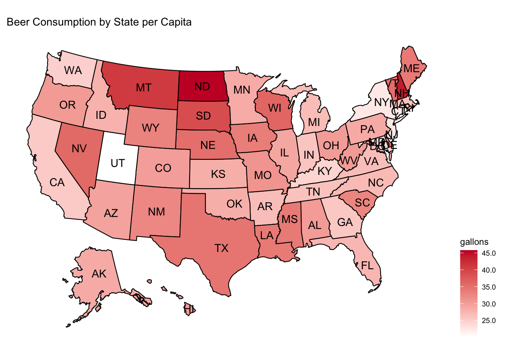
\(~\)
# Merge beer data with the breweries data. Print the first 6 observations and the last six observations to check the merged file.
## Rename some features for easier join
names(breweries)[names(breweries) == 'Brew_ID'] = 'Brewery_id'
## Merge all the data from both data set
brew_beers = merge(breweries, beers, by = "Brewery_id")
# rename features to a more meaningful name after merge
names(brew_beers)[names(brew_beers) == 'Name.x'] = 'Brewery_Name'
names(brew_beers)[names(brew_beers) == 'Name.y'] = 'Beer_Name'
write.csv(brew_beers,"beers.csv", row.names = FALSE)knitr::kable(head(brew_beers, n=6), "html")| Brewery_id | Brewery_Name | City | State | Beer_Name | Beer_ID | ABV | IBU | Style | Ounces |
|---|---|---|---|---|---|---|---|---|---|
| 1 | NorthGate Brewing | Minneapolis | MN | Pumpion | 2689 | 0.060 | 38 | Pumpkin Ale | 16 |
| 1 | NorthGate Brewing | Minneapolis | MN | Stronghold | 2688 | 0.060 | 25 | American Porter | 16 |
| 1 | NorthGate Brewing | Minneapolis | MN | Parapet ESB | 2687 | 0.056 | 47 | Extra Special / Strong Bitter (ESB) | 16 |
| 1 | NorthGate Brewing | Minneapolis | MN | Get Together | 2692 | 0.045 | 50 | American IPA | 16 |
| 1 | NorthGate Brewing | Minneapolis | MN | Maggie’s Leap | 2691 | 0.049 | 26 | Milk / Sweet Stout | 16 |
| 1 | NorthGate Brewing | Minneapolis | MN | Wall’s End | 2690 | 0.048 | 19 | English Brown Ale | 16 |
knitr::kable(tail(brew_beers, n=6), "html")| Brewery_id | Brewery_Name | City | State | Beer_Name | Beer_ID | ABV | IBU | Style | Ounces | |
|---|---|---|---|---|---|---|---|---|---|---|
| 2405 | 556 | Ukiah Brewing Company | Ukiah | CA | Pilsner Ukiah | 98 | 0.055 | NA | German Pilsener | 12 |
| 2406 | 557 | Butternuts Beer and Ale | Garrattsville | NY | Porkslap Pale Ale | 49 | 0.043 | NA | American Pale Ale (APA) | 12 |
| 2407 | 557 | Butternuts Beer and Ale | Garrattsville | NY | Snapperhead IPA | 51 | 0.068 | NA | American IPA | 12 |
| 2408 | 557 | Butternuts Beer and Ale | Garrattsville | NY | Moo Thunder Stout | 50 | 0.049 | NA | Milk / Sweet Stout | 12 |
| 2409 | 557 | Butternuts Beer and Ale | Garrattsville | NY | Heinnieweisse Weissebier | 52 | 0.049 | NA | Hefeweizen | 12 |
| 2410 | 558 | Sleeping Lady Brewing Company | Anchorage | AK | Urban Wilderness Pale Ale | 30 | 0.049 | NA | English Pale Ale | 12 |
\(~\)
# Address the missing values in each column (NA as well as empty strings).
sapply(brew_beers, function(x) sum(is.na(x)))## Brewery_id Brewery_Name City State Beer_Name Beer_ID
## 0 0 0 0 0 0
## ABV IBU Style Ounces
## 62 1005 0 0sapply(brew_beers, function(x) sum(x == ""))## Brewery_id Brewery_Name City State Beer_Name Beer_ID
## 0 0 0 0 0 0
## ABV IBU Style Ounces
## NA NA 5 0# There are 5 empty values in the Style column
# Let's replace them with NA and impute mode()
brew_beers$Style[brew_beers$Style == ""] = NA
# Calculate mode for imputation
styles = unique(brew_beers$Style[!is.na(brew_beers$Style)])
style_mode = styles[which.max(tabulate(match(brew_beers$Style, styles)))]
brew_beers$Style[is.na(brew_beers$Style)] = style_mode
# Impute median IBU value by Style groups
# I assume the IBU values are more similar in each style group therefore
# I don't take the median of all the beers' IBU but much rather grouping them by Style and calculate the
# median. Same for the ABV content.
brew_beers = brew_beers %>%
group_by(Style) %>%
mutate(IBU = replace(IBU,is.na(IBU), median(IBU, na.rm = TRUE)))
# Impute median ABV value by Style groups
brew_beers = brew_beers %>%
group_by(Style) %>%
mutate(ABV = replace(ABV,is.na(ABV), median(ABV, na.rm = TRUE)))
# convert the tibble to data frame
brew_beers = as.data.frame(brew_beers)\(~\)
# Number of unique bear styles and how many of these are from Colorado where the highest number of breweries are
most_brew = brew_beers[brew_beers$State == 'CO',]
total_uniq_style = sum(count(unique(brew_beers$Style))[2])
prod_co = sum(count(unique(most_brew$Style))[2])
cat(paste0("The total number of unique style beers produced: ", total_uniq_style, "\n"),sep = "\n")The total number of unique style beers produced: 99
cat(paste0("Number of unique style beers produced in Colorado: ", prod_co, "\n"),sep = "\n")Number of unique style beers produced in Colorado: 60
cat(paste0("Colorado is producting ", round(prod_co/total_uniq_style*100,2), "% of the total beer styles.\n"),sep = "\n")Colorado is producting 60.61% of the total beer styles.
\(~\)
# Compute the median alcohol content and international bitterness unit for each state.
# Plot a bar chart to compare.
# ABV Median Values by State
ABV_IBU_State = brew_beers %>%
group_by(State) %>%
summarise_at(vars(ABV, IBU),
list(name = median))
ABV_IBU_State = as.data.frame(ABV_IBU_State)
ABV_IBU_State = ABV_IBU_State %>% arrange(ABV_name)
ggplot(ABV_IBU_State, aes(x=State, y = ABV_name)) +
geom_bar(stat = 'identity', fill = '#C8102E') +
ggtitle('ABV Median Values by State') +
geom_text(aes(label = ABV_name), vjust = 0.5, hjust = -0.1,
data = ABV_IBU_State) +
xlab("States") + ylab("median")+
coord_flip() +
theme(legend.position = "none") + theme_tufte() + theme(plot.title = element_text(hjust = 0.5))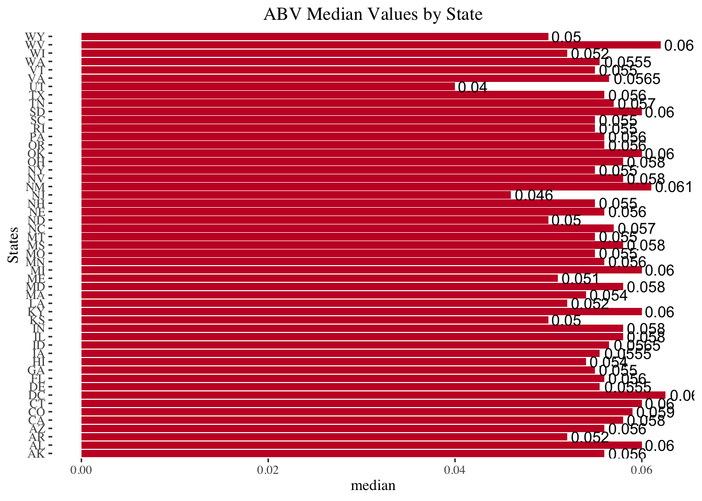
#IBU Median Values by State
ggplot(ABV_IBU_State, aes(x=State, y = IBU_name)) +
geom_bar(stat = 'identity', fill = '#C8102E') +
ggtitle('IBU Median Values by State') +
geom_text(aes(label = IBU_name), vjust = 0.5, hjust = -0.1,
data = ABV_IBU_State) +
xlab("States") + ylab("Median")+
theme(legend.position = "none") + coord_flip() + theme_tufte() + theme(plot.title = element_text(hjust = 0.5))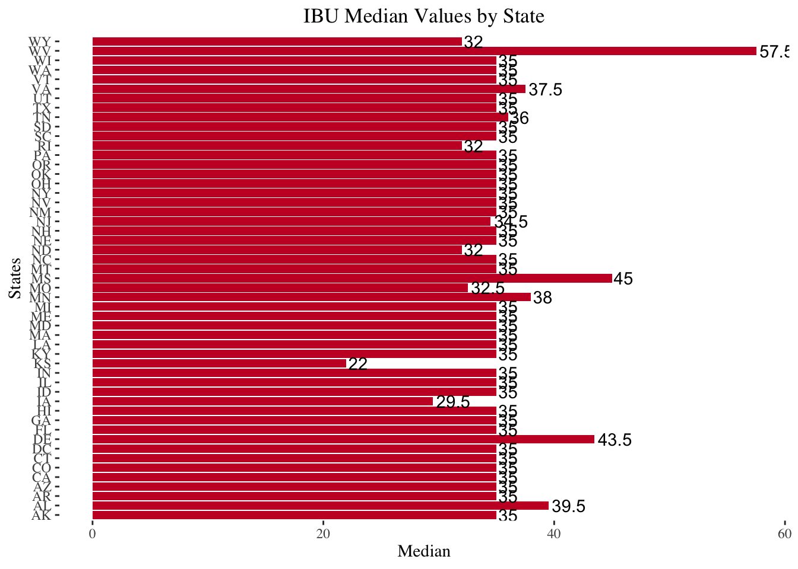
\(~\)
#Which state has the maximum alcoholic (ABV) beer? Which state has the most bitter (IBU) beer?
max_abv = as.data.frame(brew_beers[which.max(brew_beers$ABV),])
max_abv$fips = 08
max_ibu = brew_beers[which.max(brew_beers$IBU),]
max_ibu$fips = 41
long_co = -580957.756
#display the max ABV state on the map
plot_usmap(data = max_abv, values = "ABV",include = c("CO"),labels = FALSE, label_color = "white") +
labs(title = "Colorado") +
scale_fill_continuous(low = "white", high ="#C8102E",
name = "# of breweries",label = scales::comma) +
theme(legend.position = "none") +
theme(panel.background=element_blank()) +
ggrepel::geom_label_repel(data = max_abv,
aes(x = -479518.34, y = long_co*1.150490688483037, label = paste('ABV =', ABV)),
size = 4, alpha = 0.8,
#label.r = unit(0.5, "lines"), label.size = 0.5,
segment.color = "red", segment.size = 1,
seed = 1002) +
ggrepel::geom_label_repel(data = max_abv,
aes(x = -479518.34, y = long_co, label = "Colorado"),
size = 4, alpha = 0.8,
label.r = unit(0.5, "lines"), label.size = 0.5,
segment.color = "red", segment.size = 1,
seed = 1002) +
ggrepel::geom_label_repel(data = max_abv,
aes(x = -479518.34, y = long_co*1.05163886649273, label = Brewery_Name),
size = 4, alpha = 0.8,
label.r = unit(0.5, "lines"), label.size = 0.5,
segment.color = "red", segment.size = 1,
seed = 1002) +
ggrepel::geom_label_repel(data = max_abv,
aes(x = -479518.34, y = long_co*1.100064777487883, label = Beer_Name),
size = 4, alpha = 0.8,
label.r = unit(0.5, "lines"), label.size = 0.5,
segment.color = "red", segment.size = 1,
seed = 1002)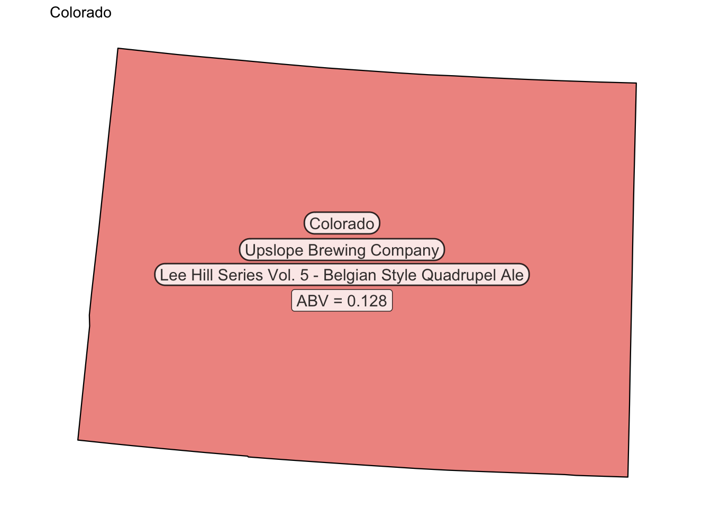
\(~\)
#display the max IBU state on the map
long_or = 180000.391
plot_usmap(data = max_ibu, values = "IBU",include = c("OR"),labels = FALSE, label_color = "white") +
labs(title = "Oregon") +
scale_fill_continuous(low = "white", high ="#C8102E",
name = "# of breweries",label = scales::comma) +
theme(legend.position = "none") +
theme(panel.background=element_blank()) +
ggrepel::geom_label_repel(data = max_ibu,
aes(x = -1624240.82, y = long_or*0.402223368670349, label = paste('IBU =', IBU)),
size = 4, alpha = 0.8,
label.r = unit(0.5, "lines"), label.size = 0.5,
segment.color = "red", segment.size = 1,
seed = 1002) +
ggrepel::geom_label_repel(data = max_ibu,
aes(x = -1624240.82, y = long_or, label = "Oregon"),
size = 4, alpha = 0.8,
label.r = unit(0.5, "lines"), label.size = 0.5,
segment.color = "red", segment.size = 1,
seed = 1002) +
ggrepel::geom_label_repel(data = max_ibu,
aes(x = -1624240.82, y = long_or*(143000.391/long_or), label = Brewery_Name),
size = 4, alpha = 0.8,
label.r = unit(0.5, "lines"), label.size = 0.5,
segment.color = "red", segment.size = 1,
seed = 1002) +
ggrepel::geom_label_repel(data = max_ibu,
aes(x = -1624240.82, y = long_or*(108000.391/long_or), label = Beer_Name),
size = 4, alpha = 0.8,
label.r = unit(0.5, "lines"), label.size = 0.5,
segment.color = "red", segment.size = 1,
seed = 1002) 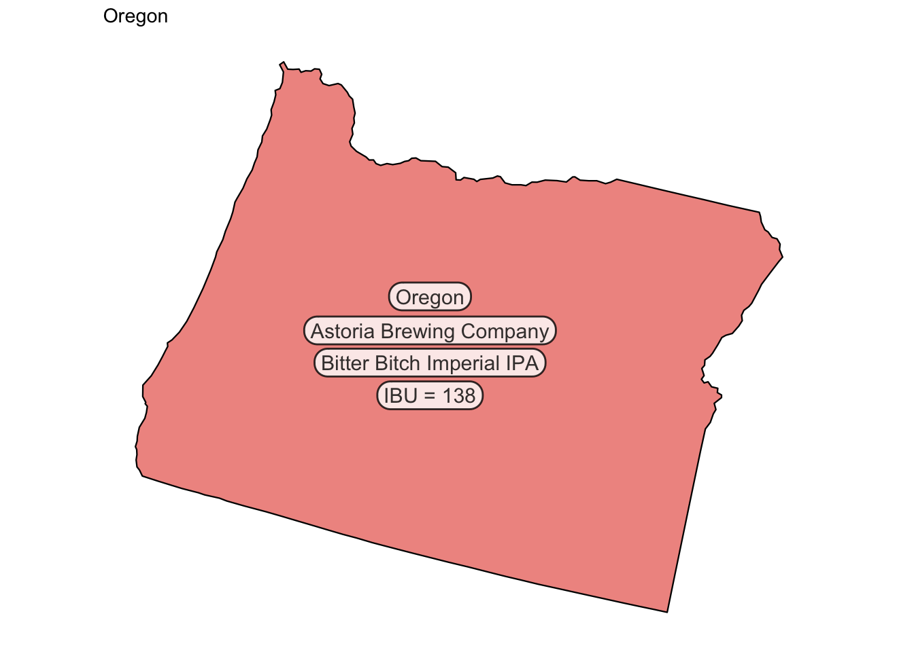
\(~\)
# Comment on the summary statistics and distribution of the ABV variable.
summary(brew_beers$ABV)## Min. 1st Qu. Median Mean 3rd Qu. Max.
## 0.0010 0.0500 0.0560 0.0597 0.0670 0.1280# Plot the distribution for ABV
par(mfrow=c(1,2))
hist(brew_beers$ABV, main = 'ABV distribution', col ="#C8102E", xlab = 'Alcoholic Content')
boxplot(brew_beers$ABV, main = 'ABV distribution', col ="#C8102E", ylab = 'Alcoholic Content')
means = mean(brew_beers$ABV)
points(means,col="yellow",pch=18)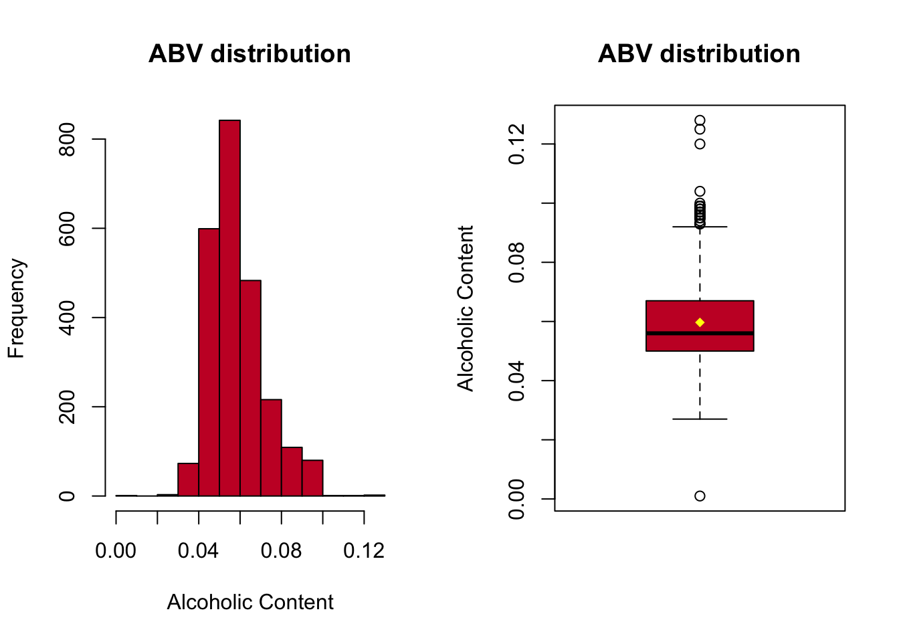
\(~\)
# Is there an apparent relationship between the bitterness of the beer and its alcoholic content?
# Draw a scatter plot. Make your best judgment of a relationship and EXPLAIN your answer.
beers %>%
ggplot(aes(x = ABV, y = IBU)) + geom_point(color = "#C8102E", shape=1) +
geom_smooth(method = "lm", color = "#00A1E1") + ggtitle("Correlation between IBU and ABV") +
xlab("ABV") + ylab("IBU") +
theme_tufte() +
theme(plot.title = element_text(hjust = 0.5))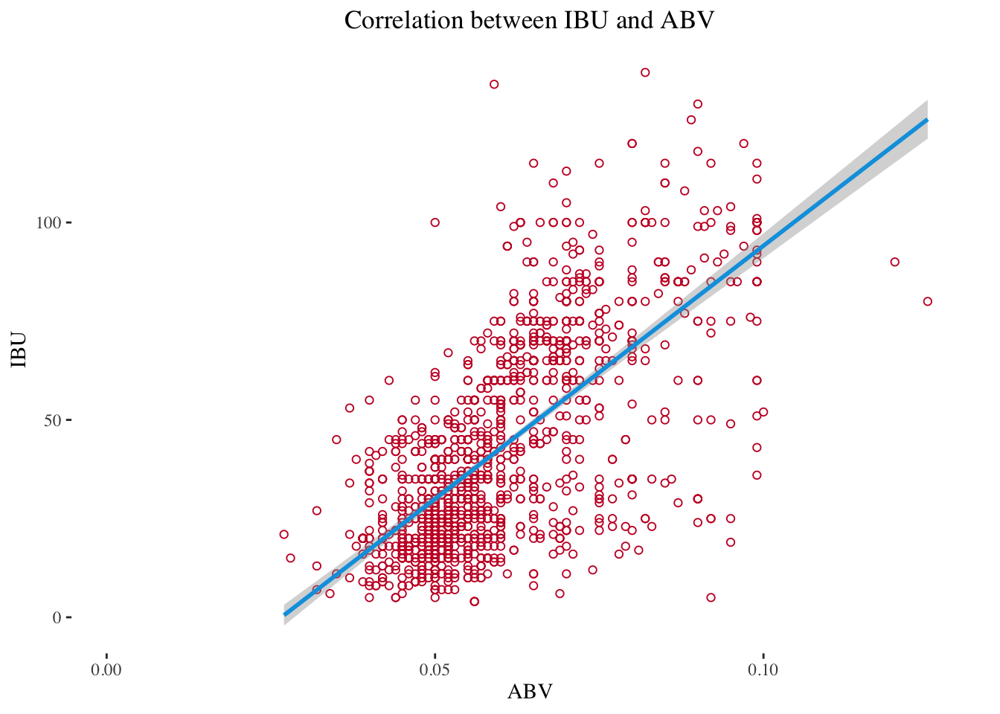
pearson_r = cor(brew_beers$ABV, brew_beers$IBU, use = "everything")
print(paste0('The pearson correlation coefficient is: ', pearson_r))## [1] "The pearson correlation coefficient is: 0.514133946293589"\(~\)
# Budweiser would also like to investigate the difference with respect to IBU and ABV # between IPAs (India Pale Ales) and other types of Ale (any beer with “Ale” in its
# name other than IPA). You decide to use KNN classification to investigate this
# relationship. Provide statistical evidence one way or the other.
# Prepare data set for the KNN model. Let's filter for IPAs and Ales
data_for_modeling = brew_beers %>% dplyr::select(Style, ABV, IBU, Ounces)
data_for_modeling$Style = gsub(".*(IPA).*", "\\1", data_for_modeling$Style, ignore.case = TRUE)
data_for_modeling$Style = gsub(".*(\\bAle\\b).*", "\\1", data_for_modeling$Style, ignore.case = TRUE)
data_for_modeling = filter(data_for_modeling, Style == 'IPA' | Style == 'Ale')
# Let's standardize the data as we have 100 fold difference between IBU and ABV
data_for_modeling = mutate(data_for_modeling, Z_ABV = scale(data_for_modeling$ABV))
data_for_modeling = mutate(data_for_modeling, Z_IBU = scale(data_for_modeling$IBU))
data_for_modeling = mutate(data_for_modeling, Z_Ounces = scale(data_for_modeling$Ounces))
ale_count = count(data_for_modeling[data_for_modeling$Style == 'Ale','Style'])[2]
ale_percent = (count(data_for_modeling[data_for_modeling$Style == 'Ale','Style'])[2] / dim(data_for_modeling)[1])*100
cat(paste0('There are ', ale_count, " Ale style beers in the data set", "\n"),sep = "\n")## There are 963 Ale style beers in the data setIPA_count = count(data_for_modeling[data_for_modeling$Style == 'IPA','Style'])[2]
IPA_percent = (count(data_for_modeling[data_for_modeling$Style == 'IPA','Style'])[2] / dim(data_for_modeling)[1])*100
cat(paste0('There are ', IPA_count, " IPA style beers in the data set", "\n"),sep = "\n")## There are 576 IPA style beers in the data set# 70/30 split of the data set to train the models:
train_70 = sample(1:dim(data_for_modeling)[1], round(0.7*dim(data_for_modeling)[1]))
train = data_for_modeling[train_70,]
test = data_for_modeling[-train_70,]#Test EQUAL VARIANCE with boxplot
par(mfrow=c(1,2))
hist(data_for_modeling$ABV, main = 'ABV distribution', col ="#C8102E", xlab = 'Alcoholic Content')
hist(data_for_modeling$IBU, main = 'IBU distribution', col ="#C8102E", xlab = 'International Bitternes Unit')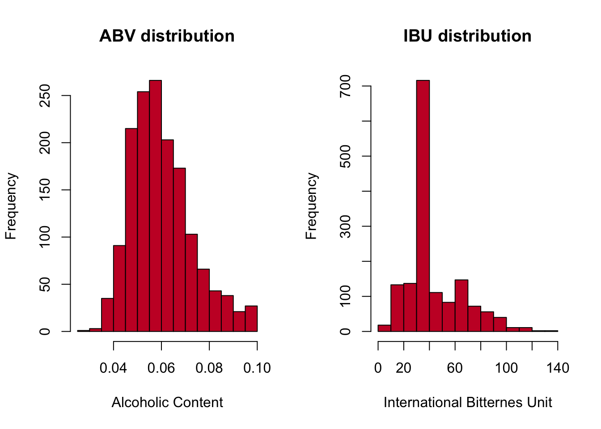
\(~\)
t.test(data_for_modeling$ABV, data_for_modeling$IBU, alternative = 'two.sided', var.equal = FALSE)##
## Welch Two Sample t-test
##
## data: data_for_modeling$ABV and data_for_modeling$IBU
## t = -79, df = 1538, p-value <0.0000000000000002
## alternative hypothesis: true difference in means is not equal to 0
## 95 percent confidence interval:
## -45.19 -43.00
## sample estimates:
## mean of x mean of y
## 0.06115 44.15789\(~\)
# Solution with KNN model
# Let's determine the best k value first based on accuracy
Accuracy_matrix = matrix(nrow=100)
for (i in 1:100)
{
CM = confusionMatrix(table(knn(train[,c("Z_ABV", "Z_IBU")], test[,c("Z_ABV", "Z_IBU")], train$Style, k = i, prob = TRUE), test$Style))$overall[1]
Accuracy_matrix[i]=CM
}
best_k = which.max(Accuracy_matrix)
fit = knn(train[,c("Z_ABV", "Z_IBU")], test[,c("Z_ABV", "Z_IBU")], train$Style, k = best_k, prob = FALSE)
confusionMatrix(table(fit, test$Style))## Confusion Matrix and Statistics
##
##
## fit Ale IPA
## Ale 258 41
## IPA 37 126
##
## Accuracy : 0.831
## 95% CI : (0.794, 0.864)
## No Information Rate : 0.639
## P-Value [Acc > NIR] : <0.0000000000000002
##
## Kappa : 0.632
##
## Mcnemar's Test P-Value : 0.734
##
## Sensitivity : 0.875
## Specificity : 0.754
## Pos Pred Value : 0.863
## Neg Pred Value : 0.773
## Prevalence : 0.639
## Detection Rate : 0.558
## Detection Prevalence : 0.647
## Balanced Accuracy : 0.815
##
## 'Positive' Class : Ale
## \(~\)
# Plot predicted values
plot.df = data.frame(test, predicted = fit)
plot.df1 = data.frame(x = plot.df$ABV,
y = plot.df$IBU,
predicted = plot.df$predicted)
find_hull = function(df) df[chull(df$x, df$y), ]
boundary = ddply(plot.df1, .variables = "predicted", .fun = find_hull)
predict_plot = ggplot(plot.df, aes(ABV, IBU, color = predicted, fill = predicted)) +
geom_point(size = 5) +
geom_polygon(data = boundary, aes(x,y), alpha = 0.5)
# Plot original data
plot.df1 = data.frame(x = plot.df$ABV,
y = plot.df$IBU,
Style = plot.df$Style)
find_hull = function(df) df[chull(df$x, df$y), ]
boundary = ddply(plot.df1, .variables = "Style", .fun = find_hull)
orig_labels = ggplot(plot.df, aes(ABV, IBU, color = Style, fill = Style)) +
geom_point(size = 5) +
geom_polygon(data = boundary, aes(x,y), alpha = 0.5)
ggarrange(orig_labels,predict_plot,
labels=c("Observations","Predictions"),
ncol=1,nrow=2)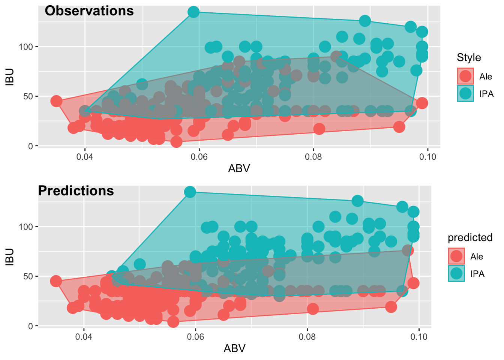
\(~\)
# Solution with NB model
model = naiveBayes(train[,c('ABV','IBU')],train$Style)
CM = confusionMatrix(table(predict(model, test[,c('ABV','IBU')], type = 'class'), test$Style))
CM## Confusion Matrix and Statistics
##
##
## Ale IPA
## Ale 261 66
## IPA 34 101
##
## Accuracy : 0.784
## 95% CI : (0.743, 0.82)
## No Information Rate : 0.639
## P-Value [Acc > NIR] : 0.0000000000108
##
## Kappa : 0.511
##
## Mcnemar's Test P-Value : 0.00194
##
## Sensitivity : 0.885
## Specificity : 0.605
## Pos Pred Value : 0.798
## Neg Pred Value : 0.748
## Prevalence : 0.639
## Detection Rate : 0.565
## Detection Prevalence : 0.708
## Balanced Accuracy : 0.745
##
## 'Positive' Class : Ale
## \(~\)
\(~\)
# 3rd party data set from https://www.thedrinksbusiness.com/2021/10/the-most-popular-beer-in-every-us-state/
fav_beer_bud = filter(fav_beer_df, fav_beer == 'Budweiser')
budw_sf = subset(nbs_map_data_sf, state_abbv %in% fav_beer_bud$abbr)
fav_beer_bud = merge(fav_beer_bud, consumption, 'full')
names(fav_beer_bud)[names(fav_beer_bud) == 'fips.x'] = 'fips'
# Plot those states only where Budweiser is the most popular
plot_usmap(data = fav_beer_bud, values = "consumption",include = fav_beer_bud$abbr.x,
labels = TRUE, label_color = "black") +
labs(title = "States where Budweiser is the most popular beer vs. # of breweries vs. highest beer consumprion") +
scale_fill_continuous(low = "white", high ="#C8102E",
name = "Beer Consumption (gal)",label = scales::comma) +
theme(legend.position = "right") +
#theme(panel.background=element_blank()) +
ggrepel::geom_label_repel(data = budw_sf,
aes(x = lan, y = lat, label = nobrews),
size = 4, alpha = 0.8,
label.r = unit(0.5, "lines"), label.size = 0.3,
segment.color = "red", segment.size = 1,
seed = 1002) 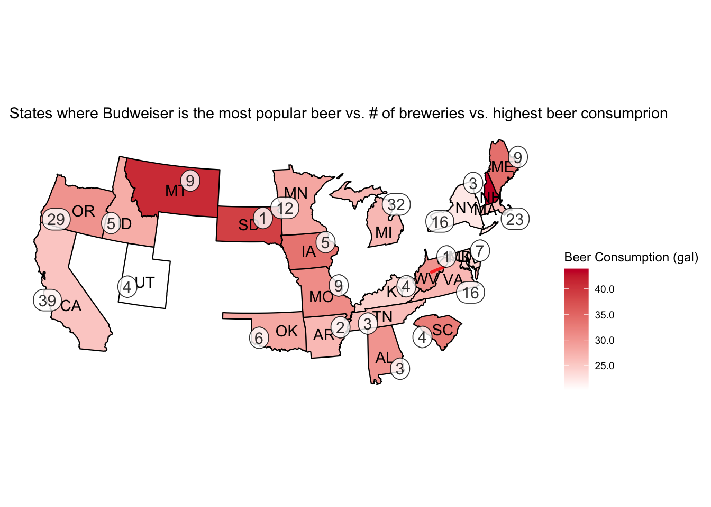
\(~\)
# prepare data, merge data frames with State abbr and full names as well as the unique beer information
# data source: https://www.census.gov/data/tables/time-series/demo/popest/2010s-state-detail.html
unique_beers = brew_beers %>% group_by(State, Style) %>% dplyr::summarize(Style_n = n())## `summarise()` has grouped output by 'State'. You can override using the
## `.groups` argument.unique_beer_state = unique_beers %>% group_by(State)%>% dplyr::summarize(Style_n = n())
unique_beer_state = as.data.frame(unique_beer_state)
names(population_by_state)[names(population_by_state) == 'NAME'] = 'full'
temp_pop = merge(population_by_state,us_map_fips,'full')
unique_percapita = merge(temp_pop,unique_beer_state,'State', 'abbr')
unique_percapita = merge(unique_percapita,nbs_df,'State', 'abbr')
# reduce dimension to the ones needed for the analysis
unique_percapita = subset(unique_percapita, select = -c(SUMLEV, REGION, DIVISION, STATE, POPESTIMATE2019, PCNT_POPEST18PLUS))
# calculate of unique beers per capita
unique_percapita$percapita = unique_percapita$Style_n/(unique_percapita$POPEST18PLUS2019/1000000)
unique_percapita = arrange(unique_percapita, percapita)
# Plot the comparison of per capita vs # of breweries
unique_percapita %>%
ggplot() +
geom_bar(data = unique_percapita, aes(x=abbr, y=nobrews), stat="identity", fill = '#C8102E') +
geom_point(data = unique_percapita, aes(x=abbr, y=percapita), size = 2, color = '#061148') +
geom_line(data = unique_percapita, aes(x=abbr, y=percapita, lty = '# of unique beers per capita'), color = '#061148', size = 1, group = 1, na.rm = TRUE) +
scale_linetype('') +
scale_y_continuous(name = 'Number of breweries',
sec.axis = sec_axis(~.*1, name = 'Number of unique beers per capita per million people')) +
labs(title = 'Number of unique beers per capita vs number of breweries by state',
subtitle = 'Population data by Census 2019',
x = 'States',
fill = '') +
theme(axis.text.x = element_text(angle = 90, vjust = 0.5, hjust=1))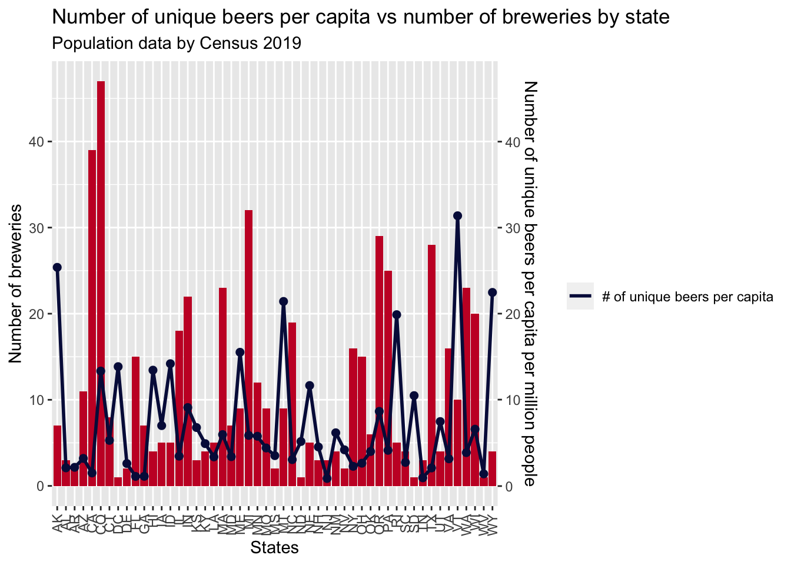
\(~\)
\(~\)
\(~\)